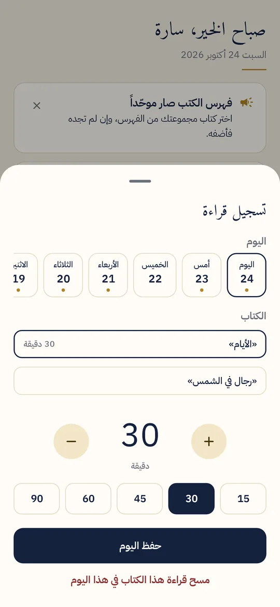
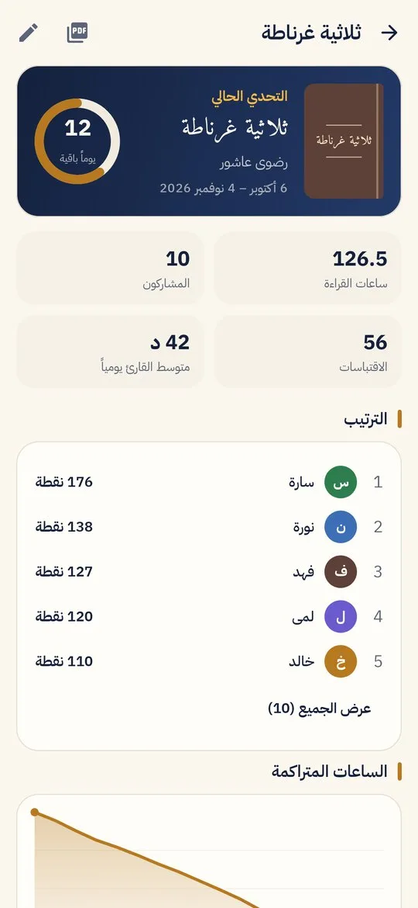
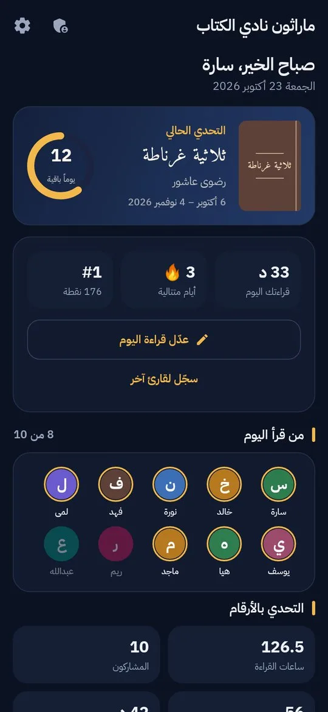

قراءة نصف ساعة كل يوم مع أصدقاء يقرؤون الكتاب نفسه أسهل من قراءة كتاب كامل وحدك.هذه فكرة الماراثون، والتطبيق يرتّبها لكم.
كل ما تحتاجه مجموعة قراءة، في تطبيق واحد
بدل نموذج Google وجدول يُحدَّث يدوياً: كل شيء يُحسب تلقائياً ويظهر فوراً.
تحديات بكتاب مشترك
لكل تحدٍّ كتاب ومدة ونظام نقاط خاص به. التحدي الحالي يظهر في الرئيسية مع الأيام الباقية.
تسجيل يومي في ثوانٍ
دقائق الكتاب المشترك وغيره، والاقتباسات، وإنهاء الكتاب وحضور النقاش، من شاشة واحدة.
نقاط وترتيب
منصة تتويج وترتيب كامل للتحدي الحالي أو لكل الماراثون، مع لوحة شرف لأبرز القرّاء.
أوسمة وأيام متتالية
خمسة أوسمة تُكسب بالقراءة الفعلية، وعدّاد للأيام المتتالية يشجّع على الاستمرار.
تحليلات واضحة
الساعات المتراكمة، ساعات كل قارئ، أيام الأسبوع، وخريطة قراءة لكل يوم.
تقارير وبيانات
تقرير PDF جاهز للمشاركة، تصدير CSV لبرنامج Excel، نسخة احتياطية، واستيراد ردود نموذج Google القديم.
شاشات التطبيق



ثلاث خطوات
- أنشئ الماراثون وأضف القرّاءاسم للمجموعة وأسماء المشاركين. لا حسابات ولا بريد.
- أنشئ تحدياًاختر الكتاب المشترك وتاريخ البداية والنهاية. نظام النقاط جاهز ويمكن تعديله.
- سجّلوا كل يومالنقاط والترتيب والأوسمة والأخبار تتحدّث فوراً مع كل تسجيل.
كل دقيقة تُحسب
المشرف يعدّل القيم لكل تحدٍّ. الأوسمة:
على هاتف واحد، أو مع المجموعة
| الوضع | مناسب لـ | الإنترنت |
|---|---|---|
| على هذا الجهاز | المشرف يسجّل قراءات المجموعة من هاتفه، والبيانات تبقى عليه. | لا يحتاج |
| مشترك | كل قارئ يسجّل من هاتفه برمز دعوة، والنتائج تظهر للجميع لحظياً. يُتاح في تحديث قادم. | يحتاج |
| تجريبي | جولة في التطبيق ببيانات وهمية قبل أن تبدأ. | لا يحتاج |
ثبّته في دقيقة
- حمّل الملفاضغط «حمّل التطبيق» من هاتف أندرويد.
- افتحهمن الإشعارات أو مجلد التنزيلات. إن طُلب «السماح بالتثبيت من هذا المصدر» فاسمح به للمتصفح.
- إن ظهر Play Protectاختر «تفاصيل إضافية» ثم «التثبيت على أي حال». التطبيق ليس على متجر Play بعد، لذلك يظهر هذا التنبيه.
أسئلة شائعة
هل التطبيق مجاني؟
نعم، بلا إعلانات وبلا اشتراكات.
هل يعمل على الآيفون؟
حالياً أندرويد فقط (الإصدار 8 فأحدث).
أين تُحفظ بياناتنا؟
في الوضع المحلي تبقى على هاتفك فقط. صدّر نسخة احتياطية من صفحة الإدارة من حين لآخر لتنقلها إلى هاتف جديد. التفاصيل في سياسة الخصوصية.
كانت مجموعتنا تستخدم نموذج Google. هل نخسر السجلّ القديم؟
لا. من الإدارة ← «استيراد ردود نموذج Google» اختر ملف CSV للردود، فيُضاف القرّاء والأيام والإنجازات تلقائياً.
كيف أحدّث التطبيق؟
حمّل الإصدار الجديد من هذه الصفحة وثبّته فوق القديم. بياناتك تبقى كما هي.
هل الملف آمن؟
الملف موقّع بمفتاح المطوّر نفسه في كل إصدار. للتحقق، بصمة SHA-256 للملف: 366d6253bf1aa692d9c0cbbca03010872afcbb80ae2accaea49e7ef15ce937c1
ابدأوا التحدي القادم
جرّب التطبيق ببيانات تجريبية أولاً، ثم أنشئ ماراثون مجموعتك.
حمّل ماراثون القراءة